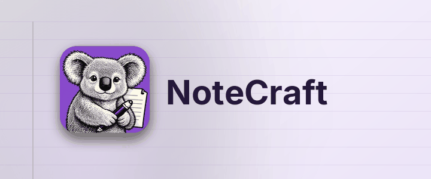

नोट्स सादी फ़ाइलों में, सादे फ़ोल्डरों में।
NoteCraft नोट्स को वैसे ही रखता है जैसे आप फ़ाइलें रखते हैं: नोटबुक एक फ़ोल्डर है, सेक्शन एक फ़ोल्डर है, पेज एक फ़ोल्डर है जिसमें एक फ़ाइल और उसकी तस्वीरें हैं। कुछ भी किसी डेटाबेस में बंद नहीं है, इसलिए जिस फ़ोल्डर पर आपका सिंक टूल पहले से नज़र रखता है वह सिंक होने वाली नोटबुक बन जाता है, और बैकअप बस एक कॉपी है।
इस सेक्शन का हर पेज NoteCraft का एक हिस्सा खुद पेज पर दिखाता है:
इस अनुच्छेद में कहीं भी क्लिक करें और लिखें। आपके रुकने के लगभग एक सेकंड बाद पेज अपने आप सहेज लिया जाता है। नए अनुच्छेद के लिए पंक्ति के अंत में Enter दबाएँ, और बाहर निकलने के लिए Escape।
शुरुआती पेज पर वापस।
इस पेज का अनुवाद एक AI मॉडल ने किया है। सुधारों का स्वागत है।